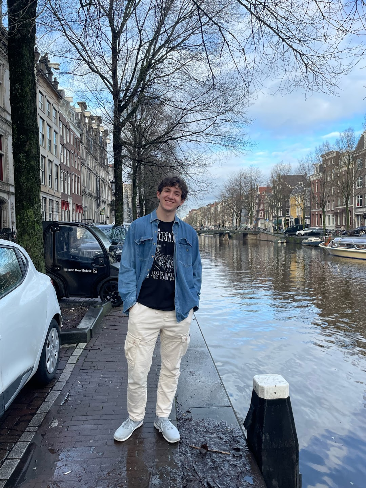

Arts, Culture, & Entertainment Journalist
adamhudacek1@gmail.com
LinkedIn: Here
Twitter/X: Here
GitHub: Here
Pitches 2 stories each week on arts, culture, & entertainment in and around the University of Maryland, College Park, with at least one reported per week. Interviews students, faculty, and members of the public in the College Park and Washington D.C. areas while writing under deadline and working with editors in a 100+ person newsroom to finalize stories. Covers live entertainment events, specifically concerts and music festivals, and has experience interviewing musicians and artists in one-on-one environments.
Responsible for covering news stories on crime, business, local government, and more within Washington D.C. in a variety of writing styles and mediums. Found stories, immersed myself in the culture of the District, and made connections with local leaders, representatives, and community advocates.
Worked to solve constituent requests with caseworkers, responded to written communications, and worked with constituents over the phone. Organized written communications for the Congressman and drafted letters and releases from the office.